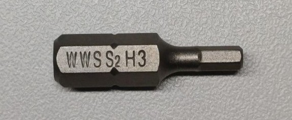
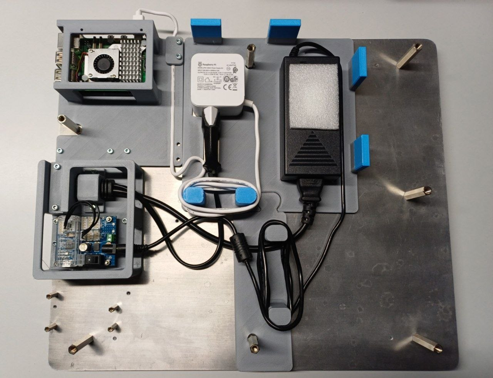
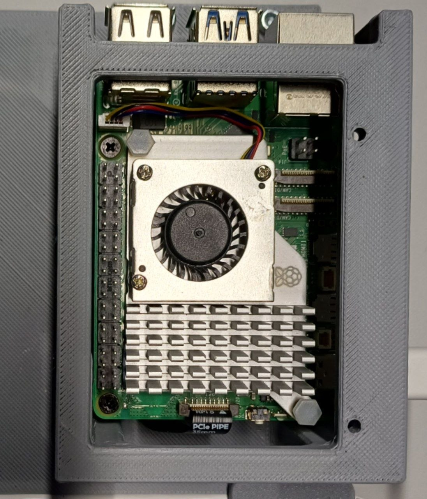
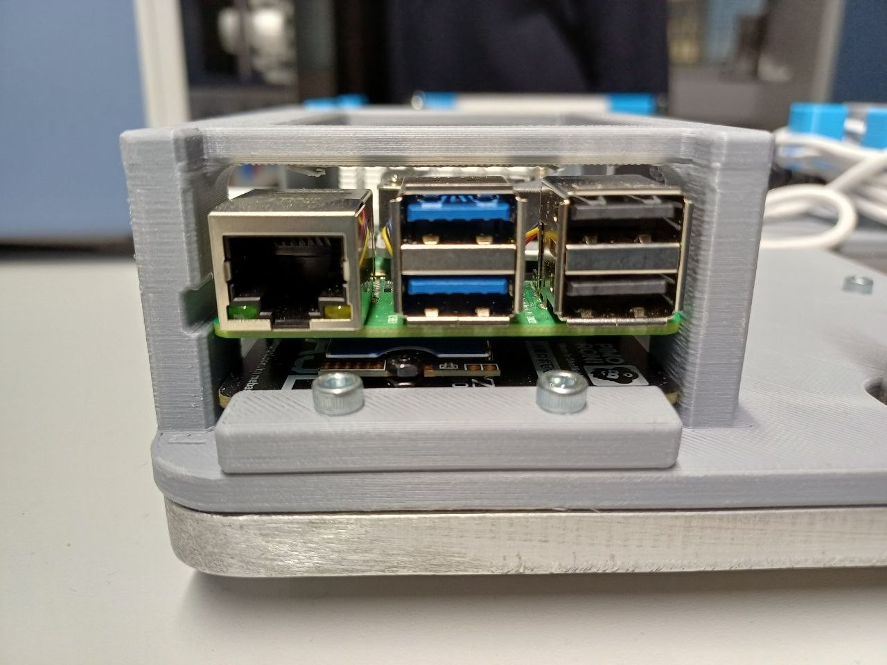
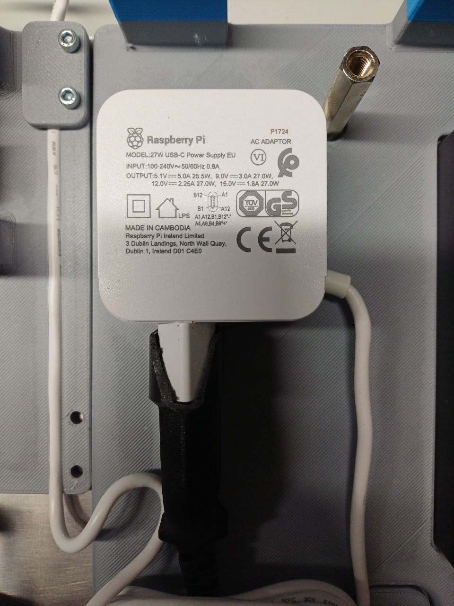
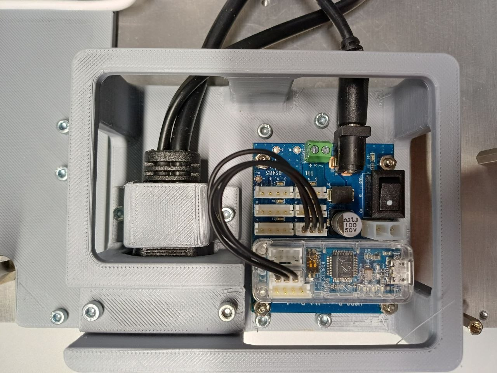
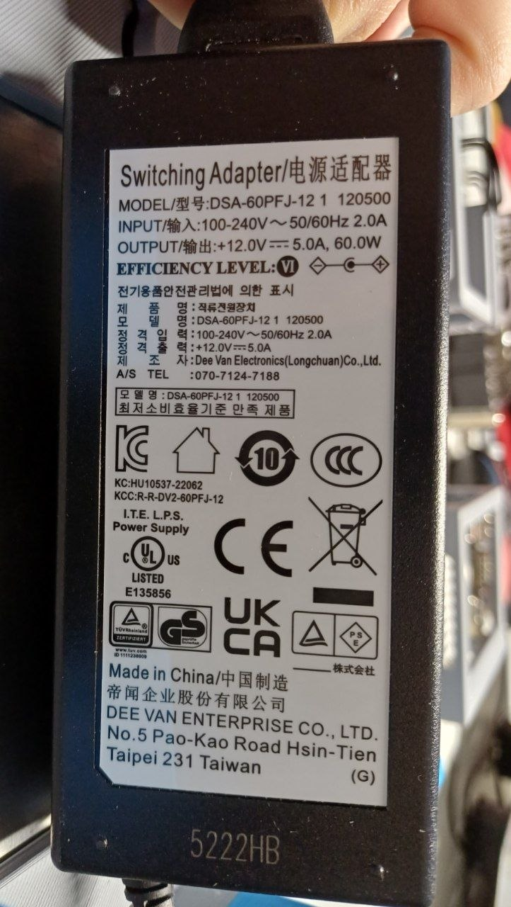
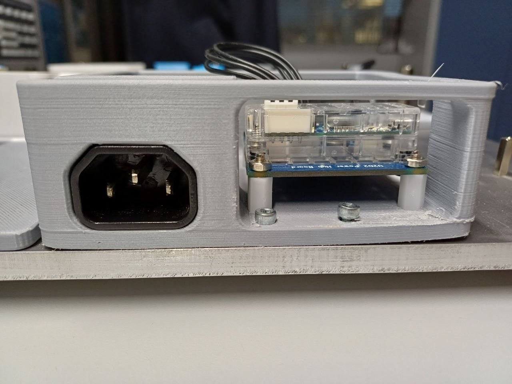

Description du matériel de la plateforme système 5 barres
Cette page décrit le matériel électronique de la plateforme et explique comment y accéder.
Prérequis pour utiliser la maquette
Pour vous connecter au Raspberry Pi et utiliser la plateforme, vous aurez besoin de :
un écran avec une entrée HDMI, et un câble micro-HDMI vers HDMI (le Raspberry Pi 5 possède des sorties micro-HDMI) ;
un clavier et une souris USB ;
le cordon d’alimentation secteur de la maquette (prise IEC, type « C13 » / câble d’ordinateur) ;
(facultatif) un câble Ethernet si vous voulez le relier au réseau.
Ouvrir le boîtier
Les boîtiers sont imprimés en 3D et fermés par des vis à six pans creux
(Allen). Pour les dévisser et accéder aux composants, utilisez un embout
H3 (6 pans de 3 mm), par exemple la référence WWS S2 H3, monté sur un
tournevis ou une visseuse.


Embout 6 pans creux H3 (3 mm) nécessaire pour ouvrir les boîtiers.
Vue d’ensemble
La plateforme regroupe, sur une plaque, quatre sous-ensembles : le Raspberry Pi et son alimentation, l’alimentation des moteurs, et le boîtier de commande Dynamixel.


Vue d’ensemble de la plateforme ouverte.
La chaîne de commande est la suivante :
Raspberry Pi 5 --USB--> U2D2 --> U2D2 Power Hub Board --> moteurs Dynamixel AX-12A
^
|
alimentation 12 V (moteurs)
Le Raspberry Pi exécute ROS 2 et envoie les ordres. Le U2D2 convertit l’USB en liaison série Dynamixel. La U2D2 Power Hub Board distribue cette liaison et l’alimentation 12 V aux moteurs, branchés en chaîne.
Raspberry Pi 5
Calculateur de la plateforme, dans un boîtier imprimé en 3D, avec un ventilateur actif (Raspberry Pi Active Cooler) et une extension de stockage Pimoroni NVMe Base (disque SSD).


Le Raspberry Pi 5 avec son ventilateur et son dissipateur.
Connectique. Sur la façade accessible du boîtier, on trouve les ports suivants (de gauche à droite) :


Façade du Raspberry Pi 5 : Ethernet, 2 × USB 3.0 (bleus) et 2 × USB 2.0 (noirs).
un port Ethernet RJ45 (Gigabit) pour le réseau filaire ;
deux ports USB 3.0 (connecteurs bleus), plus rapides — à privilégier pour l’interface U2D2 et le stockage ;
deux ports USB 2.0 (connecteurs noirs), pour le clavier et la souris.
Les autres connecteurs du Raspberry Pi 5 se trouvent sur l’autre bord de la carte : les deux sorties vidéo micro-HDMI et l’entrée d’alimentation USB-C (voir les prérequis en haut de page).
Documentation : Raspberry Pi 5
Extension de stockage : Pimoroni NVMe Base
Alimentation : bloc officiel Raspberry Pi 27 W USB-C (sortie 5,1 V / 5,0 A).


Étiquette de l’alimentation du Raspberry Pi (27 W USB-C, 5,1 V / 5,0 A).
Note
À compléter au prochain accès au robot : la quantité de RAM, le système
installé (Ubuntu 24.04 attendu) et la version de ROS 2
(lsb_release -a ; printenv ROS_DISTRO).
Interface et alimentation Dynamixel
Les moteurs sont pilotés par une interface U2D2 (ROBOTIS) associée à une U2D2 Power Hub Board. Le mains arrive par une prise IEC sur le boîtier ; un interrupteur permet de couper l’alimentation des moteurs.


Boîtier de commande : U2D2 (en bas) et U2D2 Power Hub Board (bleue), avec les connecteurs vers les moteurs et l’alimentation 12 V.
U2D2 : interface USB vers liaison série Dynamixel — documentation
U2D2 Power Hub Board : distribution de la liaison et de l’alimentation — documentation
Alimentation des moteurs : adaptateur secteur 12 V / 5,0 A (60 W), modèle
DSA-60PFJ-12(Dee Van Electronics), connecteur jack.


Étiquette de l’alimentation 12 V des moteurs (12,0 V — 5,0 A — 60 W).
Moteurs
Les deux articulations actives (\(A_1\) et \(A_5\)) sont entraînées par des servomoteurs Dynamixel AX-12A.
Documentation : Dynamixel AX-12A
Caractéristique |
Valeur |
|---|---|
Débattement |
300° (résolution 0,29° sur 1024 pas) |
Position commandée |
entier de 0 à 1023 (0 à 300°) |
Protocole |
Protocol 1.0 |
Débit par défaut |
1 000 000 bps |
Interface |
TTL half-duplex (3 fils) |
Important
Le débattement limité à 300° est une contrainte pour l’espace de travail : toutes les positions du crayon ne sont pas atteignables. Voir l’espace de travail et les singularités.
Note
À compléter : les identifiants (ID) des deux moteurs et le débit réellement configuré, à relever avec le logiciel une fois le Raspberry Pi accessible.
Récapitulatif des alimentations
Toute la plateforme est alimentée par un seul câble secteur, branché sur la prise IEC du boîtier (le même type de câble qu’un ordinateur) : c’est la seule connexion d’alimentation à brancher pour tout mettre sous tension.


L’unique prise secteur (IEC) de la maquette : le seul câble à brancher pour tout alimenter.
À l’intérieur du boîtier, ce secteur alimente deux blocs d’alimentation distincts :
Alimente |
Tension / courant |
Référence |
|---|---|---|
Raspberry Pi 5 |
5,1 V / 5,0 A (27 W) |
bloc officiel Raspberry Pi 27 W USB-C |
Moteurs (via U2D2 Power Hub) |
12,0 V / 5,0 A (60 W) |
DSA-60PFJ-12 |